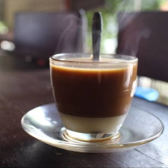
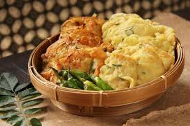

Selamat Datang di Cafe Kemang!
Temukan berbagai pilihan makanan dan minuman yang lezat
destinasi kuliner yang menghadirkan suasana nyaman dan hangat
di tengah hiruk-pikuk kota. Di sini, Anda dapat menemukan berbagai
pilihan makanan dan minuman yang lezat, mulai dari hidangan khas
nusantara hingga sajian internasional yang menggugah selera. Kami
berkomitmen untuk menyajikan cita rasa terbaik dengan bahan-bahan
berkualitas, diolah oleh tangan-tangan profesional yang berpengalaman.
Tak hanya itu, Cafe Kemang juga merupakan tempat yang tepat untuk
berkumpul bersama teman, keluarga, atau sekadar menikmati waktu sendiri
sambil ditemani secangkir kopi atau minuman favorit Anda. Jadi, silakan
duduk, rileks, dan nikmati pengalaman bersantap yang tak terlupakan
bersama kami.
Menu Makanan dan Minuman
-
Kopi Hitam - 4.000

-
Kopi Susu - 4.000
 -
Gorengan - 1.000
 -
Indomie - 5.000

Tentang Kami
Kami adalah sebuah café yang berdedikasi untuk menyajikan makanan dan minuman berkualitas tinggi dengan cita rasa yang autentik dan menggugah selera. Dengan bahan-bahan pilihan dan proses pembuatan yang penuh perhatian, setiap hidangan yang kami sajikan merupakan perpaduan sempurna antara rasa, kualitas, dan pengalaman. Kami tidak hanya sekadar tempat makan, tetapi juga ruang yang hangat dan nyaman bagi siapa saja yang ingin bersantai, berbincang, atau menikmati waktu berkualitas bersama teman dan keluarga. Komitmen kami adalah memberikan pelayanan terbaik, suasana yang ramah, serta menu yang terus berkembang sesuai dengan selera dan kebutuhan pelanggan. Selamat datang di café kami — tempat di mana rasa dan kehangatan berpadu dalam setiap sajian.
Contact
Hubungi kami di nomor 0812-3456-7890 untuk melakukan pemesanan.
instragraminstagram2
Tiktok